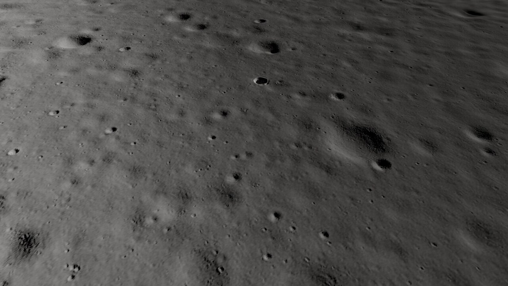
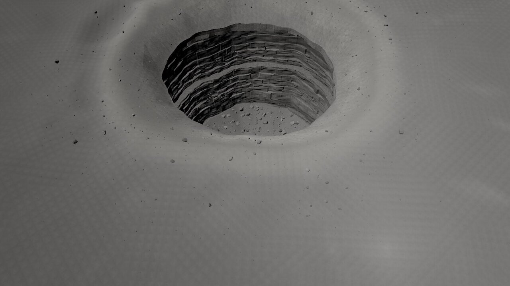
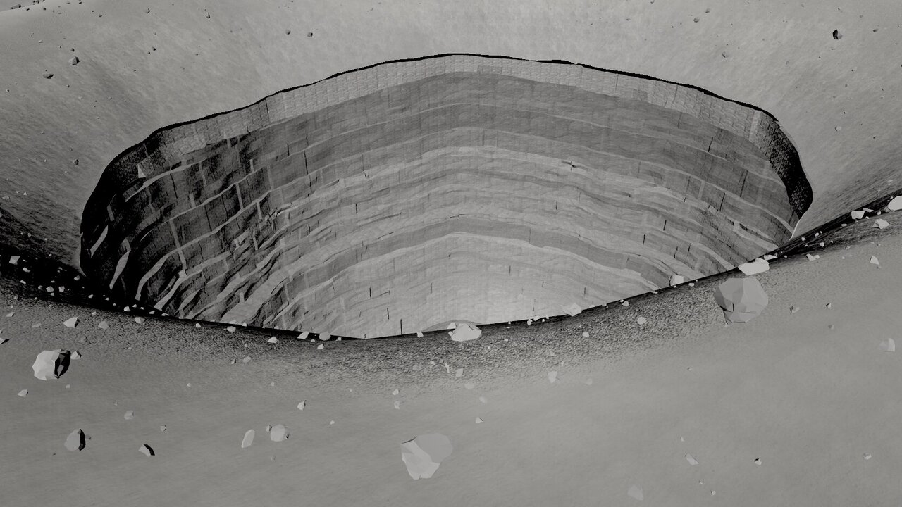
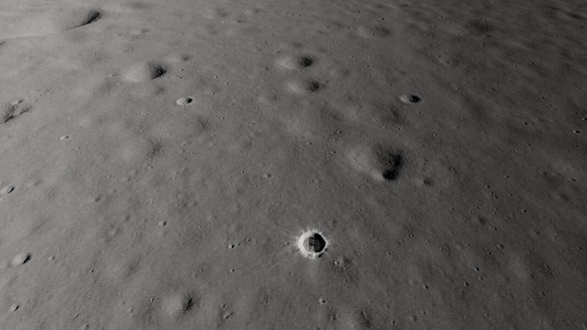
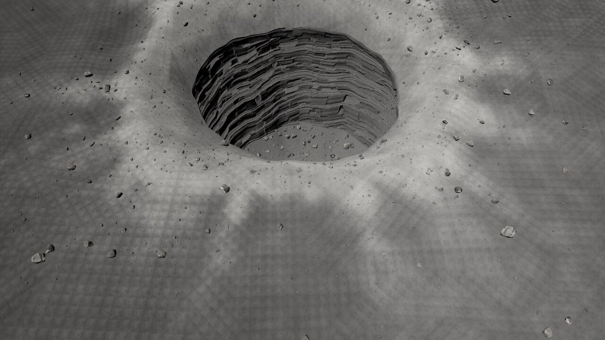
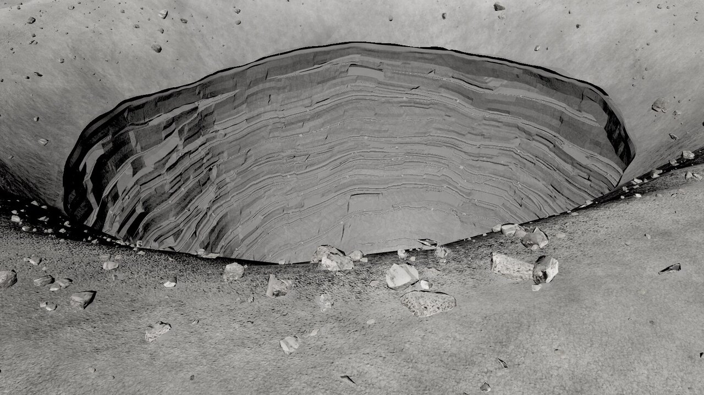
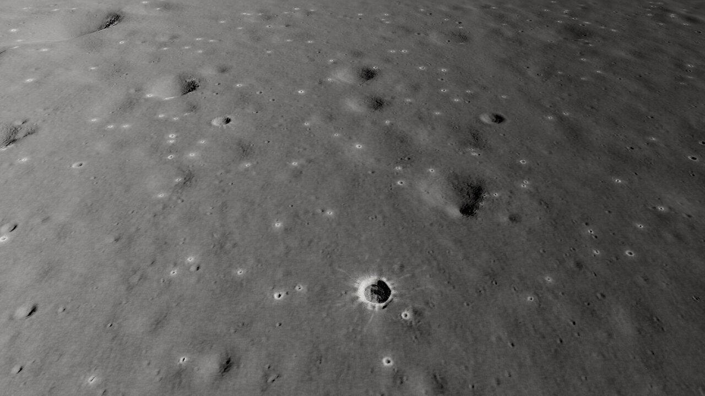
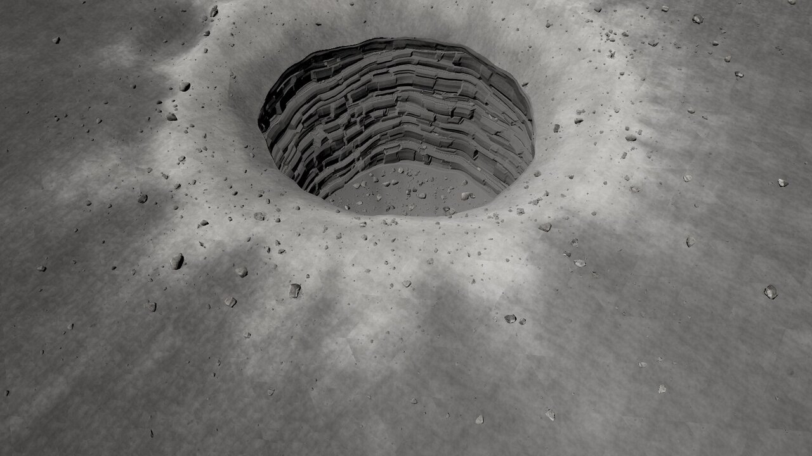
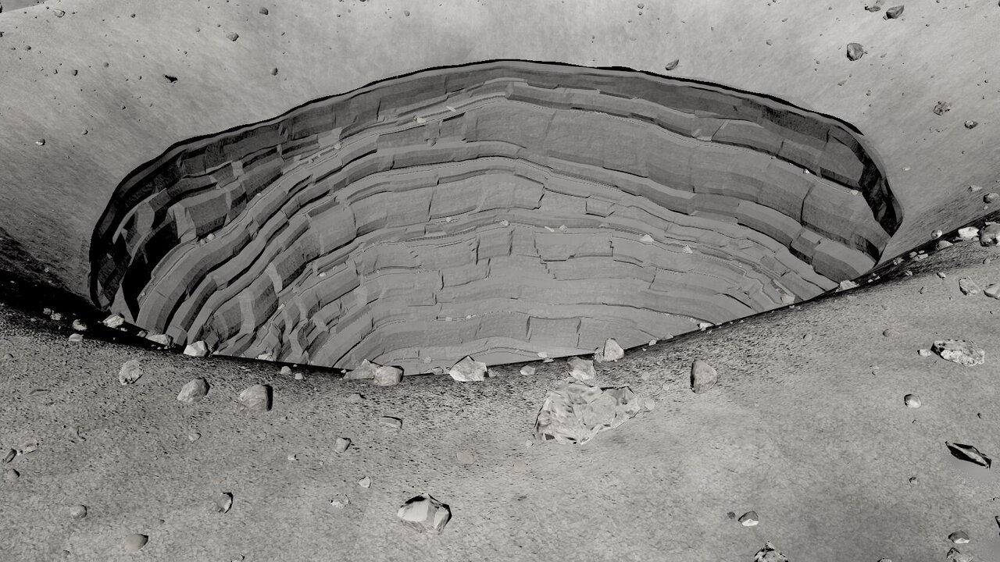

Recovered session evidence / Moon
Tranquillitatis pit
Measured mare relief and transplanted lunar features. The shaft and overhang are authored from pit measurements.
Original notes and credits
Capture and comparison archive
Original filenames preserve round and view context. These are rendered prototypes, not source photographs.

















